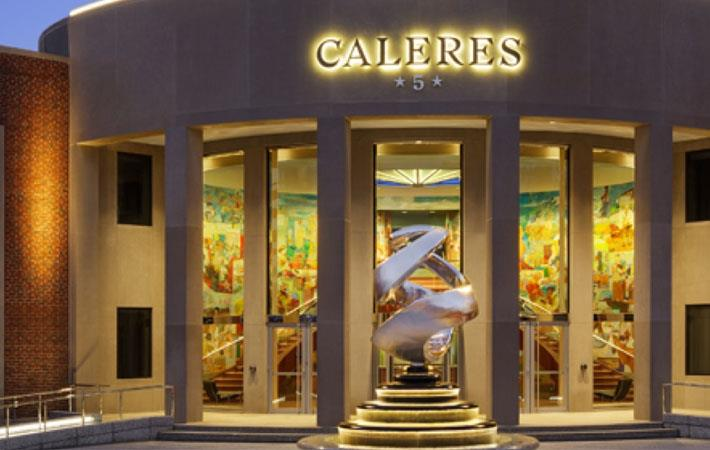
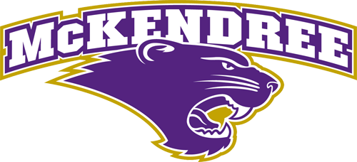

About Me
Hello, I am Feron Doss, and I am an IT professional eager to work towards a development role. I have about 3 years of experience with technical support with different types of customers. I have some personal/work experience with the programming/development process. Right now I am learning web development through LaunchCode STL and starting my development portfolio.
Experience
Technical Support
Caleres Inc
- Successfully supported the implementation project of Windows 10 and new hardware installation for 1000+ stores across US and Canada
- Troubleshooted virtual machine, software, and account issues for the company-wide upgrade to Microsoft Surface laptops for 700+ remote and on-site corporate users.
- Increase team ticket productivity and reduced call times by 2-3 minutes due to steadily updating team documentation with new information on several subject areas.
Mckendree University
- Designed and delivered new physical documentation sheet with step-by-step instructions for 1000+ students & faculty for adding university email account to pre-installed mail apps and Outlook app on iOS/Android mobile devices
- Reviewed and evaluated customers personal computers with virus and software issues and efficiently completed and PC cleanup with turnaround time less than 24 hours constantly
- Supported 100s walk-up and call-in students and faculty weekly with account management, hardware, software, and other mobile issues while utilizing university's ticketing system.
Future Plans
My future plans are to complete a web development portfolio and eventually land a position on a development team. I would like to work on a team for a while and pick up skills from differnt areas. After that, I plan to start my own Web Dev Agency that builds websites and web apps for clients starting with Freelancing on my own.